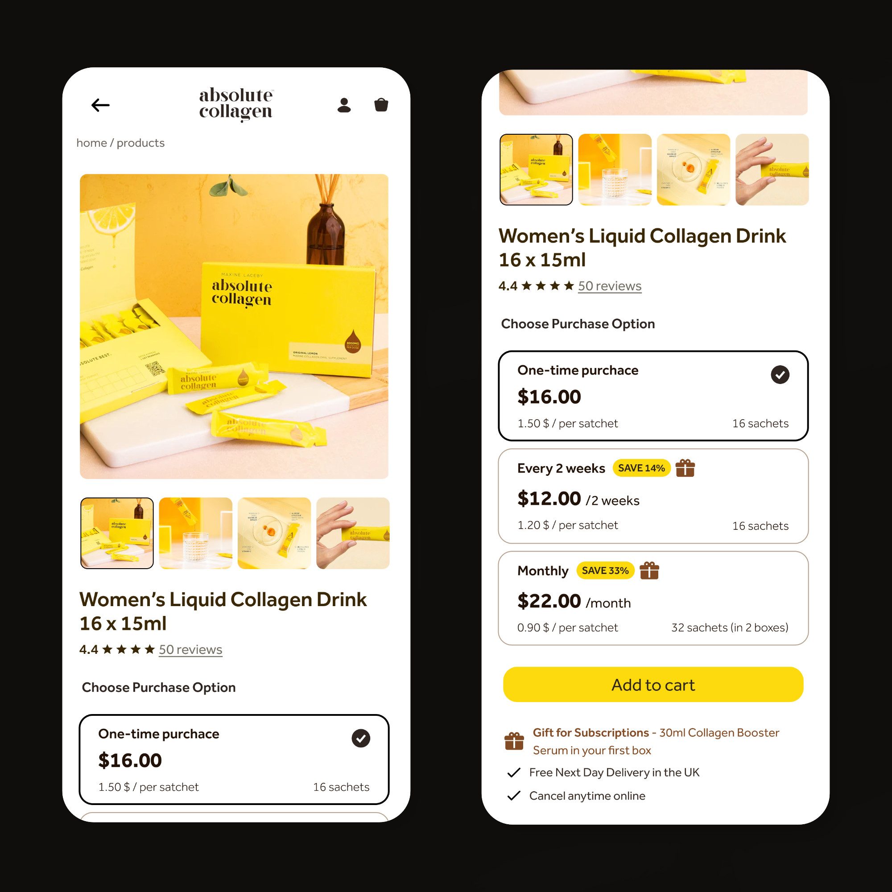

Outcomes
User-tested solutions performed noticeably better in our internal research, creating a cleaner, more unified UI. (I understand the limitations of such small sample reserach and I wish I was able to make a much bigger one! But it was still insightful - we work with what we have). Presentation was well-received by the lead-designer, and the insights were handed off for implementation by the wider team.
Renders that were presented to the lead designer:

